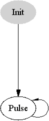
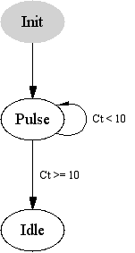
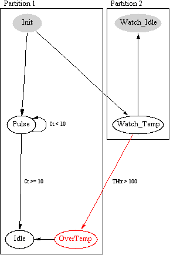

| Chap. 1 | Chap. 2 | Chap. 3 | Chap. 4 | Chap. 5 | Chap. 6 | App |
|
|
For the purposes of this tutorial, we will use a simulated heater control system. Among other things, this system allows us to set the heater current and the heater thermal mass. |
The simplest algorithms are just timed sequences of commands:
State Init {
> Telemetry Start
+5 > Set Heater Current 0
> Set Heater Thermal Mass 1
}
Here "Telemetry Start", "Set Heater Current 0", and "Set
Heater Thermal Mass 1" are all commands which are defined
via a CMDGEN program, and can be
issued interactively at the keyboard. The '>' character
introduces these experiment commands, which continue to the end
of the line. There may be leading spaces before the first
character of the command, but within the command the spelling and
spacing must match the defined command exactly or a syntax error
will be reported. (see also section
6.5.1.) The "+5"
indicates that the following command should be
issued 5 seconds after the previous command.
So far this algorithm starts up the system and initializes some parameters, but it hasn't done anything interesting. Let's add some heat to the system:
State Init {
> Telemetry Start
+5 > Set Heater Current 0
> Set Heater Thermal Mass 1
+5 > Set Heater Current 5
+5 > Set Heater Current 0
}
|
Graph of Heater Pulse goes here |
Now we've got a 5-second pulse of current, and a plot of the resulting current and temperature, but once is never enough. What will happen if we keep pulsing the current at 5-second intervals? To find out, we could duplicate the last two heater current lines as many times as desired, but we can do better by defining a new state.
Basic program control flow is accomplished by grouping
commands into different states. Control is passed to the
beginning of a new state by use of the
Validate command.
A simple loop can be created by validating the current state,
causing command execution to begin again from the top.
Let's move our current pulse into a new state called "Pulse" and make an endless loop:
State Init {
> Telemetry Start
+5 > Set Heater Current 0
> Set Heater Thermal Mass 1
+5 Validate Pulse;
}
State Pulse {
> Set Heater Current 5
+5 > Set Heater Current 0
+5 Validate Pulse;
}
|
 |
Endless loops are not as unreasonable as they might be in other sorts of programs since we reserve the option of issuing a "Quit" command from the keyboard. In the lab, we might well want to set up a sequence of operations for continuous repetition to give us time to explore the behaviour of the system.
On the other hand, loops that aren't endless are also useful.
Suppose we want to explore the behaviour of our heater system
with continual pulses while steadily increasing the heater's thermal
mass, but we wish to stop when the mass reaches 10. If the thermal
mass is stored in a variable named Ct, the
following code would do the trick:
State Pulse {
> Set Heater Current 5
+5 > Set Heater Current 0
+5 > Add .2 to Heater Thermal Mass
{ if ( Ct >= 10 ) Validate Idle;
else Validate Pulse;
}
}
State Idle {}
|
 |
In this case, state Idle simply stops issuing commands, but
it is easy to see how it might move on to other operations. Some points that are
worth noting about this example:
.tmc output file, surrounding them with other
appropriate TMC constructs. Although Validate outside of
curly braces is a valid TMCALGO keyword, it is also a valid TMC keyword, and
that is how it is used in this example.Validate,
some other things that might be usefully done inside a TMC statement include:In a simple algorithm, only one state is valid at a time, so validating another state discontinues processing of the current state. As algorithms grow more complex, it becomes desirable to allow processing in more than one state at a time. This is where partitions come in.
Partitions break the algorithm up into separate groups of states. Within each partition, exactly one state is active at a time, but this means that there are as many states active simultaneously as there are partitions.
Partitions can be entirely independent or tightly coupled as the case requires. States in one partition can be validated from another partition, and statements in one partition can depend on states in another partition. When a state in another partition is validated, control flow in the current partition is not affected, but the control flow of the other partition is shifted to the new state regardless of its present status.
One useful application for multiple partitions is supervisory routines that watch for out-of-range conditions independent of the current processing state. Suppose we want to watch for an over-temperature condition on our heater:
State Init {
> Telemetry Start
+5 > Set Heater Current 0
> Set Heater Thermal Mass 1
+5 Validate Watch_Temp;
Validate Pulse;
}
State Pulse {
> Set Heater Current 5
+5 > Set Heater Current 0
+5 > Add .2 to Heater Thermal Mass
{ if ( Ct >= 10 ) Validate Idle;
else Validate Pulse;
}
}
State OverTemp {
> Set Heater Current 0
{ msg( 2,
"Heater over temperature" ); }
Validate Idle;
}
State Idle {}
PARTITION
State Watch_Idle {}
State Watch_Temp {
{ if ( THtr > 100 ) {
Validate OverTemp;
Validate Watch_Idle;
}
}
}
|
 |
It is often useful to take advantage of the fact that TMCALGO compiles TMC code which compiles to C code. TMCALGO contains features which allow you to embed TMC or C code directly inside your TMCALGO program, often eliminating the need to create a separate file for a simple definition.
As we have seen, TMC code can be embedded inside a state using curly
braces. TMC code may also appear outside of any state usinig curly braces.
In this case, the outer set of curly braces are removed before the code
is written to the .tmc file, allowing top-level TMC definitions
to be made. [This is in violation of normal scoping conventions, of course,
and a more sophisticated compiler would be able to handle TMC statements
outside of states without enclosing curly braces, but this approach allows
the desired results and was easily achievable.]
TMC allows the embedding of C statements (which are otherwise invisible
to the TMC compiler) by use of "%{" and "%}" bracketing.
TMCALGO uses the same convention, and passes the
entire block, delimeters included, to the .tmc output. This
eliminates the need for double-quoting of C-statements in TMCALGO.
Algorithms can generate useful status displays when run from a
doit script. The status includes
information about each partition, what the current state is,
what command is going to be executed next and how long before
it is executed. The status display requires two rows on the screen
for each displayed partition. You can select which partitions
are displayed and where by defining appropriate fields in the
corresponding .tbl or .fld
files.
As mentioned in the mkdoit2 manual, data fields with names of the form:
%TMA:<algo>:<partition number>
will be interpreted as defining space for status reports for the named algo and partition number, where partitions are implicitly numbered starting with 1. The specified fields must span the entire width of the display and require two rows.
Defining such fields is most easily accomplished by using
table. An appropriate table field specification
for the first partition of our hsimalgo would be:
(%TMA:hsimalgo:1,0+1,2);
The elements after the field name are the width and length, respectively of the resulting field. '0+1' indicates the field has no minimum width, but should be stretched to be as wide as possible. '2' indicates that exactly two rows are required.
If you are going to use the same data display with different algorithms at different times, you may want to take advantage of table's Overlay feature optimize your use of screen real estate.
It is safe to assume that you can display any partition's status on any display. Strictly speaking, there are some restrictions, but they are difficult to explain and have yet to be a problem. If you run into trouble, talk to Norton.
| Chap. 1 | Chap. 2 | Chap. 3 | Chap. 4 | Chap. 5 | Chap. 6 | App |
Return to Manuals Guide. Written by Norton T. Allen
| last updated: Mon Apr 26 11:37:27 2004 | webmaster@huarp.harvard.edu |
| Copyright 2003 by the President and Fellows of Harvard College | |